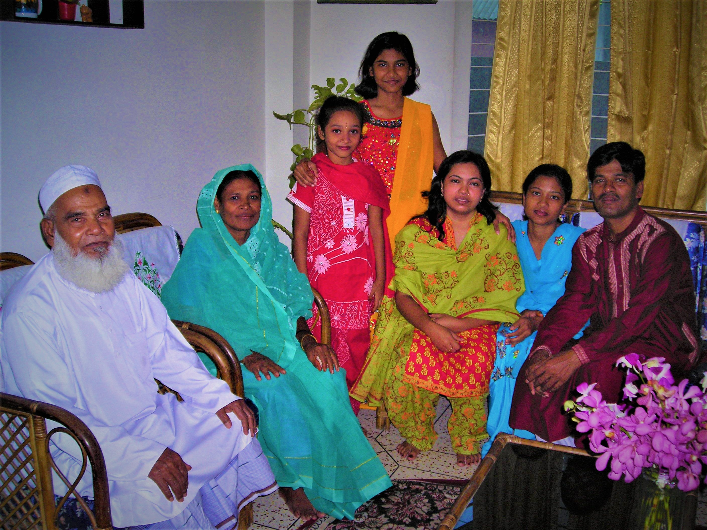
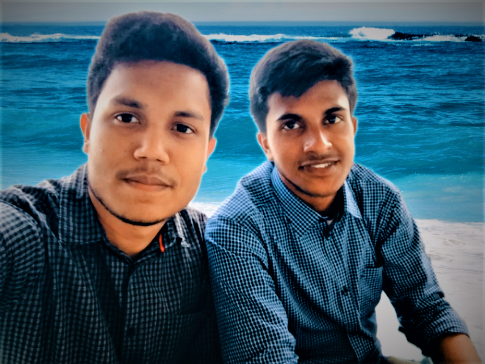

GALLARY

I love Myself ❤❤❤
Today I am choosing to love myself because I have nothing to lose and everything to gain. When I put myself down, I only miss out on moments of joy and happiness.When I put myself down, I hide my value away from myself – I shield my body in pity. I hurt too much. When I choose to love myself, I have everything to gain because I will be open and free, not tied back or hidden away by my own self-constructed limitations. I love and accept myself,
so that I can move towards knowing myself in the most sincere and subtle way I can. And so I can look for solutions with hope and bravery for each one of my difficulties, if it’s even possible.
And if it’s not, I accept the infinite possibilities that life wants to present to me. I don’t compare myself,
because it does my no good. Comparing people or situations does no good, because I haven’t lived through what you have and you haven’t lived through what I have. And that’s why the situations are different. Everyone lives them based on their experiences.
See More...

Families are like branches on a tree.
A family is a group of people that are related to each other directly and indirectly.
My family is my everything. Without them, I would not be who I am today. So here's a "thank you" to the most
wonderful people in my life. This is why I love you all so much.
They have to love me. They may not like me at times, but they will always love me. I know that I can always run back to my family and they will accept me with open arms.
They are proud of me. I may never save the world or do anything wildly spectacular, but my family will be proud of me anyway. They will be there cheering me on through every step in life, and I will never take that for granted.
They inspire me. There are few people that I find more inspirational than the people in my family. They always seem to find the silver lining in life and take every breath as a blessing. I strive to be as wonderful as the people that make up my family.
See More...
Families are like branches on a tree.
we grow in different directions yet our roots remain as one-
A family is a group of people that are related to each other directly and indirectly.
My family is my everything. Without them, I would not be who I am today. So here's a "thank you" to the most
wonderful people in my life. This is why I love you all so much.They have to love me. They may not like me at times, but they will always love me. I know that I can always run back to my family and they will accept me with open arms.
They are proud of me. I may never save the world or do anything wildly spectacular, but my family will be proud of me anyway. They will be there cheering me on through every step in life, and I will never take that for granted.
They inspire me. There are few people that I find more inspirational than the people in my family. They always seem to find the silver lining in life and take every breath as a blessing. I strive to be as wonderful as the people that make up my family.
See More...

Somehow my best friend always knows when something is bothering me or I am upset Even when I don’t say a word about it or don’t show it on my face, you somehow always know that I am upset or if something is bothering me. You let me be and don’t push me for telling it to you. You wait until I feel like sharing and you know I will eventually.
When I am upset, you try to make me smile Rather than just pushing me to tell you why am I upset, you try to put a smile on my face. You do every possible thing for making me happy and forget the reason why I am upset. And that’s the reason why I Love You my best friend, more than anyone and forever.
See More...
True friendship can afford true knowledge. It does not depend on darkness and ignorance.
When I need someone, be it a little help for the projects, or for dealing with some friend problem, or if I had a tiff with my family, you always find a way to help me. Whenever I need you and whatever for, you are always there helping me. You never say no to me for any kind of help. You soothe me like a poem soothes a poet.Somehow my best friend always knows when something is bothering me or I am upset Even when I don’t say a word about it or don’t show it on my face, you somehow always know that I am upset or if something is bothering me. You let me be and don’t push me for telling it to you. You wait until I feel like sharing and you know I will eventually.
When I am upset, you try to make me smile Rather than just pushing me to tell you why am I upset, you try to put a smile on my face. You do every possible thing for making me happy and forget the reason why I am upset. And that’s the reason why I Love You my best friend, more than anyone and forever.
See More...